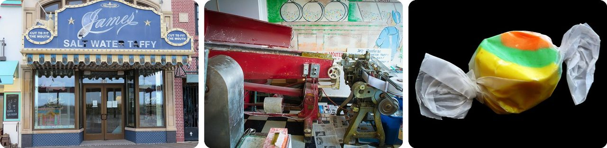
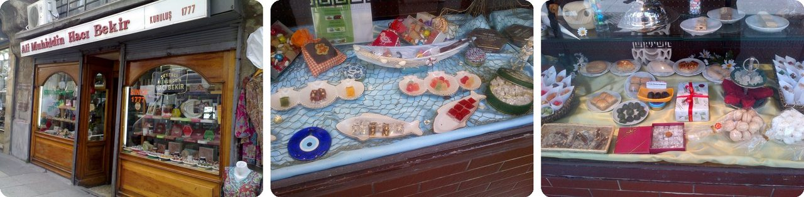
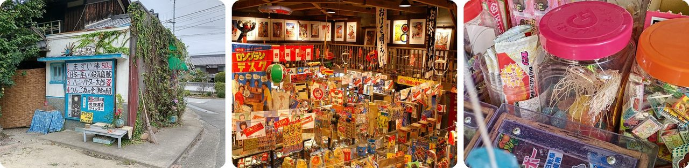

🌍 톱 10 세계의 유명하고 재미있고 이상한 사탕 가게
2026년 11월 27일
1. 🏴 런던의 M&M's 월드는 지구에서 가장 큰 사탕 가게예요
 M&M's 월드는 2011년 6월 13일 런던 레스터 광장에 문을 열었어요. 넓이가 약 3만 5,000제곱피트로, 세계에서 가장 큰 사탕 가게예요. 테니스장 12개쯤 되는 크기예요.
M&M's 월드는 2011년 6월 13일 런던 레스터 광장에 문을 열었어요. 넓이가 약 3만 5,000제곱피트로, 세계에서 가장 큰 사탕 가게예요. 테니스장 12개쯤 되는 크기예요.
런던시는 이 광장을 "세계적인 명소"로 바꾸고 싶어서, 뉴욕 타임스스퀘어의 변신을 따라 했어요. 그래서 거대한 사탕 가게가 옛 스위스 센터 건물로 들어왔어요.
이곳만 있는 게 아니에요. 첫 번째 M&M's 월드는 1997년에 라스베이거스 스트립에 생겼고, 뉴욕 가게에는 사탕이 가득 든 관 72개로 만든 2층 높이의 "초콜릿 벽"이 있어요.
테니스 대회를 열어도 될 만큼 큰 사탕 가게예요.
2. 🇺🇸 딜런스 캔디 바는 윌리 웡카 생일에서 시작됐어요
 패션 디자이너 랄프 로렌의 딸 딜런 로렌은 여섯 살 생일에 영화 「윌리 웡카와 초콜릿 공장」을 봤어요. 그리고 몇 년 뒤인 2001년, 뉴욕에 자기만의 사탕 가게를 열었어요.
패션 디자이너 랄프 로렌의 딸 딜런 로렌은 여섯 살 생일에 영화 「윌리 웡카와 초콜릿 공장」을 봤어요. 그리고 몇 년 뒤인 2001년, 뉴욕에 자기만의 사탕 가게를 열었어요.
딜런스 캔디 바에는 세계 곳곳에서 온 사탕이 약 7,000가지 있어요. 로렌은 패션, 예술, 사탕 문화를 섞고 싶었다고 말했어요.
가장 잘나갈 때는 가게가 20곳이 넘었어요. 맨해튼 어퍼이스트사이드의 큰 가게는 돈 문제로 2021년에 문을 닫았지만, 지금도 뉴욕과 로스앤젤레스에 가게가 있어요.
한마디로, 영화를 보던 아이의 꿈이 자라서 진짜 사탕 가게가 됐어요.
3. 🇺🇸 허쉬 초콜릿 월드에는 노래하는 소가 나오는 무료 놀이기구가 있어요
 펜실베이니아주 허쉬에서는 예전에 방문객들이 진짜 초콜릿 공장을 견학할 수 있었어요. 그런데 사람이 너무 많이 와서 감당이 안 됐고, 그래서 허쉬는 1973년 6월 30일에 대신 초콜릿 월드를 열었어요.
펜실베이니아주 허쉬에서는 예전에 방문객들이 진짜 초콜릿 공장을 견학할 수 있었어요. 그런데 사람이 너무 많이 와서 감당이 안 됐고, 그래서 허쉬는 1973년 6월 30일에 대신 초콜릿 월드를 열었어요.
가장 인기 있는 건 초콜릿이 만들어지는 과정을 하나하나 보여 주는 무료 놀이기구예요. 지금은 노래하는 소들이 나오고, 다 타고 나면 허쉬 간식을 공짜로 줘요.
1988년에는 이 놀이기구에 CP-1이라는 로봇 안내원이 생겼어요. 하지만 1년도 안 돼서 사라졌어요. 그동안 초콜릿 월드에는 첫해에만 140만 명이 다녀갔어요.
마지막에 디저트를 주는 놀이공원 기구라고 생각해 보세요.
4. 🇺🇸 애틀랜틱시티의 태피 가게는 한때 굴 상자에 사탕을 담아 팔았어요

1880년에는 이미 뉴저지주 애틀랜틱시티 나무 산책로의 사탕 가판대에서 태피를 팔고 있었어요. 태피는 말랑하고 쫀득한 사탕이에요. 유명한 이야기에 따르면 폭풍이 와서 바닷물이 태피 가판대를 덮쳤고, 주인은 그걸 "솔트워터(바닷물) 태피"라고 팔았대요. 이 이야기는 아마 지어낸 거예요.예전에 유리 공예가이자 생선 장수였던 조지프 프랄린저는 1884년에 태피 가판대를 넘겨받았어요. 그리고 태피를 1파운드짜리 상자에 담아 기념품으로 팔자는 아이디어를 떠올렸어요.
첫 주말을 위해 상자 200개를 샀는데, 일요일 낮 12시에 다 팔렸어요. 그래서 근처 해산물 식당으로 달려가 굴 상자를 구해서 그날 남은 태피를 팔았어요. 지금도 1800년대부터 있던 태피 가게들이 산책로에서 태피를 팔아요.
다시 말해, 아마 일어나지도 않은 폭풍에서 이름을 딴 바닷가 기념품이에요.
5. 🏴 잉글랜드에서 가장 오래된 사탕 가게는 1827년부터 문을 열었어요
 노스요크셔의 작은 마을 패틀리 브리지에는 '잉글랜드에서 가장 오래된 사탕 가게'라는 이름의 가게가 있어요. 1827년에 문을 열었으니, 내년이면 200살이 돼요.
노스요크셔의 작은 마을 패틀리 브리지에는 '잉글랜드에서 가장 오래된 사탕 가게'라는 이름의 가게가 있어요. 1827년에 문을 열었으니, 내년이면 200살이 돼요.
건물은 더 오래됐어요. 1661년에 지어졌으니, 사탕 가게가 문을 열었을 때 이미 166살이었어요.
2014년에 기네스 세계 기록은 이곳을 세계에서 쉬지 않고 가장 오래 장사한 사탕 가게로 올렸어요. 지금도 아니스 사탕, 감초 사탕, 셔벗 가루가 든 비행접시 사탕 같은 옛날 간식을 팔아요.
아이들을 여덟 세대쯤 맞이해 온 사탕 가게예요.
6. 🇸🇪 한 과부의 박하 사탕 막대가 스웨덴 마을을 사탕 나라로 만들었어요
 1858년, 아말리아 에릭손의 남편은 그녀가 아이를 낳은 지 며칠 만에 세상을 떠났고, 그녀는 갓난 딸과 단둘이 남았어요. 그때 스웨덴에서는 여자가 사업을 시작하기가 아주 어려웠어요. 하지만 마을들은 가난한 과부에게 특별 허가를 내주곤 했고, 그래서 1859년 1월 10일 그렌나 마을은 그녀가 사탕을 팔 수 있게 허락했어요.
1858년, 아말리아 에릭손의 남편은 그녀가 아이를 낳은 지 며칠 만에 세상을 떠났고, 그녀는 갓난 딸과 단둘이 남았어요. 그때 스웨덴에서는 여자가 사업을 시작하기가 아주 어려웠어요. 하지만 마을들은 가난한 과부에게 특별 허가를 내주곤 했고, 그래서 1859년 1월 10일 그렌나 마을은 그녀가 사탕을 팔 수 있게 허락했어요.
그녀가 만든 건 빨간색과 하얀색의 박하 사탕 막대, 폴카그리스예요. 이름은 "폴카 돼지"라는 뜻이에요. 폴카는 빙글빙글 도는 춤이고, "돼지"는 옛날에 사탕을 부르던 속어였어요. 설탕 반죽을 끓인 다음 손으로 늘이고 꼬아서 만들어요. 그녀는 99살에 세상을 떠날 때까지 조리법을 비밀로 지켰어요.
지금 그렌나에는 주민이 2,500명 정도밖에 없지만, 해마다 100만 명이 넘는 사람이 찾아오고, 폴카그리스를 파는 가게가 20곳쯤 있어요.
한마디로, 한 여자의 사탕이 마을 전체를 사탕 가게로 만들었어요.
7. 🇦🇹 빈의 데멜은 초콜릿 케이크 때문에 호텔과 법정 싸움을 했어요
 데멜은 1786년 빈에서 문을 열었어요. 1874년에 황제가 이곳을 왕실 공식 과자점으로 정했고, 시시라고 불린 엘리자베트 황후도 손님이었어요.
데멜은 1786년 빈에서 문을 열었어요. 1874년에 황제가 이곳을 왕실 공식 과자점으로 정했고, 시시라고 불린 엘리자베트 황후도 손님이었어요.
데멜의 여종업원들은 지금도 옛날식으로 아주 공손하게 말해요. "고르셨어요?" 대신 "이미 고르셨사옵니까?" 같은 식으로 물어요.
그리고 케이크 전쟁이 벌어졌어요. 자허 호텔과 데멜은 둘 다 자허토르테라는 초콜릿 케이크를 팔았는데, 1954년에 호텔이 소송을 걸었어요. 두 곳은 이름이나 잼 한 겹 같은 문제로 7년 동안 다퉜어요. 1963년, 호텔은 "오리지널 자허토르테"라는 말을 갖게 됐고, 데멜은 삼각형 초콜릿 도장을 갖게 됐어요.
케이크 하나를 두고 7년 동안 줄다리기한 두 과자점이라고 생각해 보세요.
8. 🇹🇷 이스탄불의 하즈 베키르는 1777년에 터키시 딜라이트를 발명했다고 말해요

1777년, 베키르라는 사탕 장인이 이스탄불에 작은 사탕 가게를 열었어요. 그가 메카 순례를 다녀온 뒤로 사람들은 그를 "하즈"라고 부르기 시작했어요. 순례를 다녀온 사람에게 붙이는 칭호예요.가게는 베키르가 현대의 터키시 딜라이트, 즉 로쿰을 만들었다고 말해요. 로쿰은 설탕 가루를 묻힌 말랑한 젤리 조각이에요. 가게 이야기로는 그가 밀가루 대신 녹말을 써서 부드럽고 쫀득하게 만들었대요. 하지만 역사학자들은 확신하지 않아요. 비슷한 페르시아 과자가 몇백 년이나 더 오래됐고, 그가 발명했다는 진짜 증거는 없거든요.
어쨌든 오스만 궁전은 이 가게에서 과자를 샀고, 베키르는 궁전의 수석 사탕 장인이 됐어요. 지금은 그의 집안 5대째가 가게를 운영해요.
다시 말해, 사탕 하나로 거의 250년 동안 자랑해 온 가게예요.
9. 🇧🇷 리우의 콘페이타리아 콜롬부는 거울로 만든 궁전 같아요
 1894년, 포르투갈 이민자 두 사람이 리우데자네이루 시내에 과자점 겸 카페인 콘페이타리아 콜롬부를 열었어요.
1894년, 포르투갈 이민자 두 사람이 리우데자네이루 시내에 과자점 겸 카페인 콘페이타리아 콜롬부를 열었어요.
1912년부터 1918년 사이에 벨기에 안트베르펜에서 가져온 거대한 크리스털 거울로 가게를 채우고, 조각한 자단나무로 테두리를 둘렀어요. 1922년에는 2층에 찻집을 더 지었는데, 1층 천장에 뚫린 구멍으로 위층의 스테인드글라스 천창이 올려다보여요.
유명한 작가와 예술가가 워낙 많이 모여서 사람들은 이곳을 "브라질 문학 아카데미 지점"이라고 불렀어요. 대통령들, 벨기에 국왕, 엘리자베스 2세 여왕도 다녀갔어요.
무도회장처럼 차려입은 과자점이에요.
10. 🇯🇵 일본의 다가시야는 아이들에게 "하찮은" 과자를 팔아요

다가시는 일본의 값싼 사탕과 과자이고, 다가시야는 그걸 파는 작은 가게예요. 이름은 대략 "하찮은 과자"라는 뜻이에요. 하나에 10~200엔 정도라서, 아이 용돈으로도 살 수 있어요.다가시는 아이들을 위해 만들어졌어요. 마스코트가 그려진 알록달록한 포장 덕분에 아직 글을 못 읽는 아이도 좋아하는 걸 고를 수 있고, 작은 장난감이 들어 있거나 과자를 하나 더 공짜로 받을 기회가 있는 것도 있어요. 후에 라무네라는 사탕은 불면 휘파람 소리가 나요.
1950년대부터 1980년대 초까지 다가시야는 방과 후에 모이는 곳이었어요. 1980년대 후반에 아이들이 쓸 돈이 많아지자, 많은 다가시야가 편의점으로 바뀌었어요.
그러니까 아이 용돈에 딱 맞춘 사탕 가게예요.
재미있는 사실
데멜과 자허 호텔이 다툰 그 케이크는 십대가 발명했을지도 몰라요. 한 이야기에 따르면 프란츠 자허는 1832년에 메테르니히 공작을 위해 자허토르테를 만들었는데, 그때 겨우 15살이나 16살로 아직 요리를 배우던 중이었대요. 그 연도를 증명하는 기록은 없지만, 몇 년 뒤 그의 아들 에두아르트가 그렇다고 말했어요. 아이와 십대가 발명한 음식들은 다음에 탐험할 달콤한 주제가 될 수 있어요.
사진 출처 (Wikimedia Commons)
- #1: M&M'S London Wall of M&M'S Picture 2.jpg by Mepatm, CC BY-SA 4.0
- #1: M&M's World, London 1.jpg by Philafrenzy, CC BY-SA 4.0
- #1: M&M'S London Facade.jpg by Mepatm, CC BY-SA 4.0
- #2: Dylan's Candy Bar, New York City (1628512247).jpg by Casper Moller from London, United Kingdom, CC BY 2.0
- #2: Dylan's Candy Bar candy artwork (flickr) by Rachel from Cupcakes Take the Cake, CC BY 2.0
- #2: Dylan's Candy Bar, Miami.jpg by Phillip Pessar, CC BY 2.0
- #3: Hershey Chocolate World, Hersheypark, 2013-08-10.jpg by Paulo Ordoveza from Washington, DC, Public domain
- #3: 2015-09-30 Chocolate World Roaster.jpg by Hmich176, CC BY-SA 4.0
- #3: Hershey's Chocolate World interior.jpg by Toohool, CC BY-SA 4.0
- #4: James Saltwater Taffy Shop.jpg by Concord, CC BY-SA 4.0
- #4: Salt Water Taffy Stretching and Wrapping Machines.jpg by Visitor7, CC BY-SA 3.0
- #4: Colourful wrapped salt water taffy (3747358050).jpg by Lara604 from Seattle, WA, CC BY 2.0
- #5: The Oldest Sweet Shop in England, High Street, Pateley Bridge - geograph.org.uk - 4621491.jpg by Bill Harrison, CC BY-SA 2.0
- #5: Pateley Bridge High Street, 'The Oldest Sweet Shop in England' window display - geograph.org.uk - 7887746.jpg by Michael Garlick, CC BY-SA 2.0
- #5: Oldest Sweet Shop of England 02.JPG by Immanuel Giel, CC BY-SA 3.0
- #6: Making polkagrisar.jpg by Niklas Morberg, CC BY-SA 2.0
- #6: Polkagrisar in Granna.jpg by Niklas Morberg, CC BY-SA 2.0
- #6: Flickr - cyclonebill - Polkagris.jpg by cyclone bill, CC BY-SA 2.0
- #7: Wien-Kohlmarkt-48-Nr 14-Cafe Demel-2009-gje.jpg by Gerd Eichmann, CC BY-SA 4.0
- #7: Demel Vienna 2011.jpg by E-W, CC BY-SA 3.0
- #7: Wien-Kohlmarkt-44-Nr 14-Cafe Demel-2009-gje.jpg by Gerd Eichmann, CC BY-SA 4.0
- #8: Ali Muhiddin Hacı Bekir (1777).jpg by rg-fotos, CC BY-SA 2.0
- #8: Marzipan and lokum.jpg by E4024, CC BY-SA 4.0
- #8: Hacı Bekir - Kadikoy.jpg by E4024, CC BY-SA 4.0
- #9: Confeitaria Colombo (2) (6738795079).jpg by Leandro Neumann Ciuffo, CC BY 2.0
- #9: Confeitaria Colombo.JPG by Eugenio Hansen, OFS, CC BY-SA 3.0
- #9: Confeitaria Colombo, Rio.JPG by Eugenio Hansen, OFS, CC BY-SA 3.0
- #10: Dagashiya Isobe-Shouten Oct 2025.jpg by Chacmool, CC BY-SA 4.0
- #10: Dagashi-ya-no-yume-museum1.jpg by Jason1208, CC BY-SA 3.0
- #10: Itohikiame.png by Mozzucu, CC BY 4.0


.jpg){kind=link}


.jpg){kind=link}


.jpg){kind=link}


_(6738795079).jpg){kind=link}